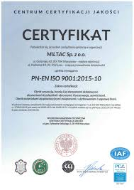

Gwarancja to pisemne lub cyfrowe zobowiązanie producenta albo sprzedawcy (gwaranta) do nieodpłatnego usunięcia wad fizycznych podzespołu komputerowego lub wymiany go na nowy, jeśli usterka ujawni się w określonym czasie.
Ochrona gwarancyjna daje użytkownikowi pewność, że zakupiony sprzęt – np. procesor, płyta główna czy karta graficzna – spełnia normy jakościowe i w razie awarii fabrycznej zostanie naprawiony bez dodatkowych kosztów.

Okres gwarancji na części komputerowe wynosi zazwyczaj od 2 do nawet 10 lat (np. w przypadku zasilaczy czy pamięci RAM). Realizacja naprawy odbywa się najczęściej poprzez zgłoszenie serwisowe typu RMA (Return Merchandise Authorization).
Gwarancja nie obejmuje zazwyczaj uszkodzeń mechanicznych, przepięć sieciowych spowodowanych burzą, zalania płynem ani usterek powstałych w wyniku nieprawidłowego montażu lub modyfikacji sprzętu.